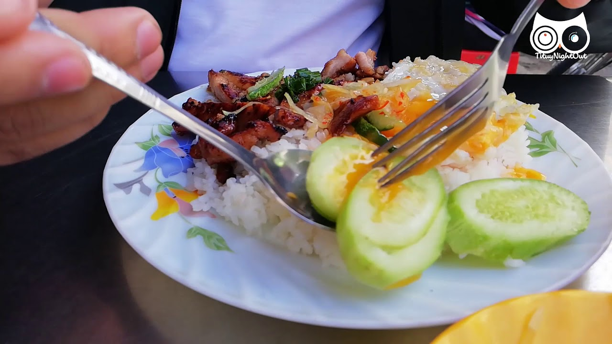

About our Ingredient
Although there are many variations of Com Tam that have different ingredients and styles, a popular, featured Com Tam dish commonly known as "Cơm Tấm Sườn Bì Chả" has the following ingredients:
- Broken Rice - a traditionally cheaper grade of rice produced by damage in milling.[4][14] It is mainly used as a food industry ingredient in America and Europe, but in West Africa and Southeast Asia is used for human consumption.[4] Broken rice is fragmented, not defective; there is nothing wrong with it.[16] This is the main ingredient of Com Tam.
- Sườn nướng - Grilled pork ribs
- Bì - thin strands of pork and cooked pork skin seasoned with roast rice powder
- Chả trứng - Vietnamese-style steamed omelet with meatloaf. Nowadays this may be substituted with an omelet or fried egg
- Scallion and oil garnish - chopped scallion lightly fried in heated oil until softened (serve both scallion and oil)
- Various veggies such as sliced cucumber & tomato; and pickled vegetables such as carrot and radish pickles
- Mixed fish sauce (Nước mắm pha) - a sweet, sour, salty, savory and/or spicy sauce served in a small bowl beside the Com Tam dish. This ingredient is commonly considered an important part of a Com Tam dish